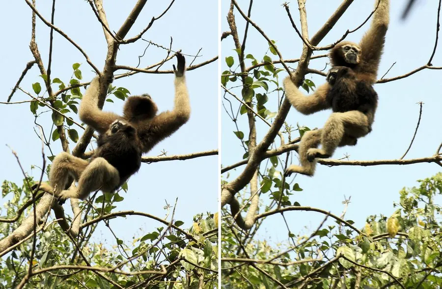

哺乳动物 · 动物界
白眉长臂猿 Hoolock hoolock

分布于南亚和缅甸的树栖长臂猿，雄性通体黑色、眉间有白色带纹，雌性呈黄褐色，清晨以二重唱宣告领地。
- 分类
- 门脊索动物门纲哺乳纲目灵长目科长臂猿科属白眉长臂猿属
- 栖息环境
- 热带雨林与山地常绿林的树冠层
- 地理分布
- 孟加拉国、印度东北部、缅甸及中国云南西部
- 保护级别
- IUCN 濒危（EN）；中国国家一级保护动物
物种志
白眉长臂猿体长 0.4–0.6 米，体重 5–8 kg，没有尾巴，是体型较小的长臂猿。雄性通体黑色，眉部有一条明显的白色带纹，因此得名；雌性为黄褐至灰白色，面部有浅色环纹。前肢明显长于后肢，双手呈钩状，适合在树冠层摆荡。
白眉长臂猿分布于孟加拉国、印度东北部、缅甸和中国云南西部的热带雨林和山地常绿林，是树冠层的臂行高手，常在树间摆荡跃过数米距离。它以果实、嫩叶、花芽和小型动物为食，过一夫一妻的家庭群生活，早晨雄性和雌性会合唱二重唱，用歌声宣告领地并加强配偶关系。雌性妊娠期约 7 个月，每胎 1 仔，幼仔约 2 岁才独立。由于森林砍伐和非法捕猎，白眉长臂猿数量持续下降，被列为濒危。
形态与习性
- 食性果实、嫩叶、花芽与小型动物
- 体长0.4–0.6 m，无尾
- 体重5–8 kg
- 寿命野外约 25–30 年
- 繁殖妊娠期约 7 个月，每胎 1 仔
- 社会结构一夫一妻的家庭群
- 运动双臂摆荡的臂行方式，一次可跨越数米
趣味知识
- 白眉长臂猿雄性通体黑色，眉间有一条醒目的白色带纹。
- 清晨雌雄会合唱二重唱，用歌声宣告领地和巩固配偶关系。
- 它没有尾巴，前肢远长于后肢，在树间摆荡前进。
- 中国云南西部有极少量白眉长臂猿分布，被列为国家一级保护动物。